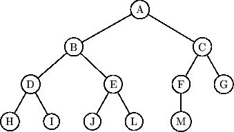

Next: Huffman Codes
Up: Trees
Previous: Traversals
Contents
Index
A binary tree is a tree which is either empty, or one in
which every node:
- has no children; or
- has just a left child; or
- has just a right child; or
- has both a left and a right child.
We have already seen examples of binary trees; both
Fig 2.2 considered in the discussion of optimal
sorting, and Fig 2.3 on Page ![[*]](file:/maths/faces/local/lib/latex2html-2K.1beta/icons/crossref.gif) which was used to illustrate the process of optimal merging, are
binary trees, although in each case, the situation in which a node can
have just one child does not occur. Note also that this is rather
different from an ordered tree, since for a binary tree we
distinguish between a node with a single left child, and one with a
single right child. An alternative definition, which is ``cleaner''
is to first introduce the concept of a terminal, or ``null'' node,
which has no children, and then define a binary tree to be one in
which every node other than the null node has precisely two children.
which was used to illustrate the process of optimal merging, are
binary trees, although in each case, the situation in which a node can
have just one child does not occur. Note also that this is rather
different from an ordered tree, since for a binary tree we
distinguish between a node with a single left child, and one with a
single right child. An alternative definition, which is ``cleaner''
is to first introduce the concept of a terminal, or ``null'' node,
which has no children, and then define a binary tree to be one in
which every node other than the null node has precisely two children.
A complete binary tree is a
special case of a binary tree, in which all the levels, except perhaps
the last, are full; while on the last level, any missing nodes are to
the right of all the nodes that are present. An example is shown in
Fig. 3.5.
Figure 3.5:
A complete binary tree: the only ``missing'' entries can be on
the last row.
|  |
Example 3.5
Give a space - efficient implementation of a complete binary tree in
terms of an array
A. Describe how to pass from a parent to its two
children, and vice-versa
Solution An obvious one, in which no space is wasted, stores the root of the
tree in A[1]; the two children in A[2] and A[3],
the next generation at A[4] up to A[7] and so on. An
element A[k] has children at A[2k] and A[2k+1],
providing they both exists, while the parent of node A[k] is at
A[k div 2]. Thus traversing the tree can be done very efficiently.
Next: Huffman Codes
Up: Trees
Previous: Traversals
Contents
Index
Ian Craw
2001-04-27